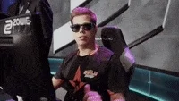

E-sport
Najpopularniejsze tytuły esportowe
League_of_LegendsPieniądze w e-sporcie
Największe organizacje esportowe w Polsce
| 1.XKOM AGO |
| 2.Illuminar Gaming |
| 3.Wisła Kraków |
| 4.Avez Esport |
| 5.Honoris |
| 6.Pact |
| 7.Izako Boars |
| 8.Pompa Team |
| 9.Cleant Mix |
Największe imprezy esportowe w Polsce
|  | |
| IEM | |
| PGL Major | |
| ESL MP | |
| Ultraliga | |
| PLE | |
Moje osiągnięcia esportowe
Osiągnięcia w grze Counter Strike: Global Offensive *Winter game festiwal Suwałki 1/4 (LAN)